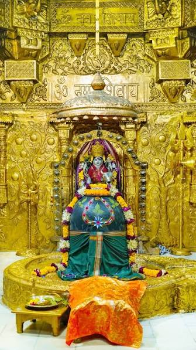
Somnath
Gujarat
Discover the twelve sacred manifestations of Lord Shiva, their spiritual importance, locations and divine heritage.
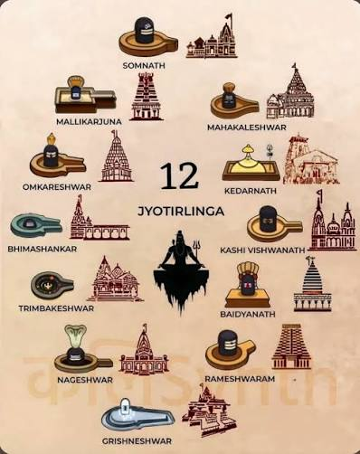
A Jyotirlinga is a sacred form of Lord Shiva worshipped as an infinite pillar of divine light. The twelve Jyotirlinga temples are among the most revered Shiva pilgrimage destinations in India.
Each shrine has a distinct legend, spiritual identity and cultural tradition. Devotees visit these temples seeking blessings, courage, peace and liberation.
Scroll through the twelve sacred Jyotirlinga temples of Lord Shiva located across India.

Gujarat
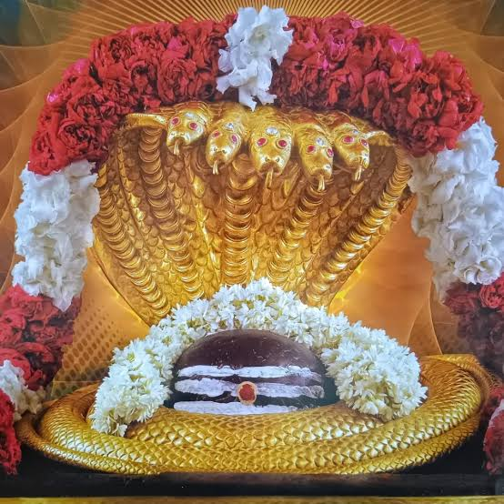
Andhra Pradesh
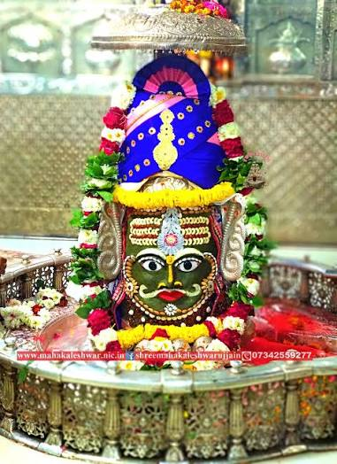
Madhya Pradesh
Madhya Pradesh
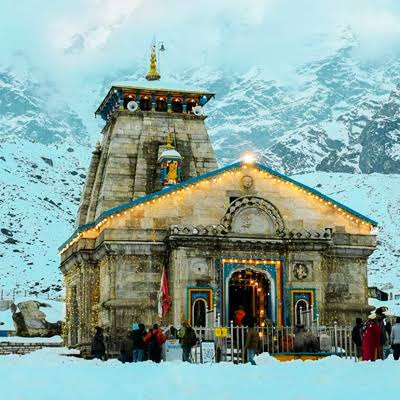
Uttarakhand
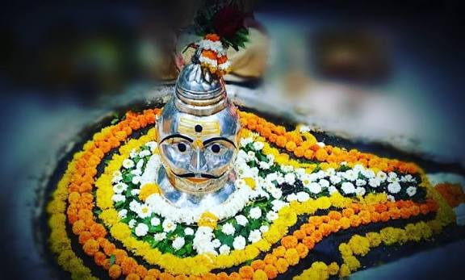
Maharashtra
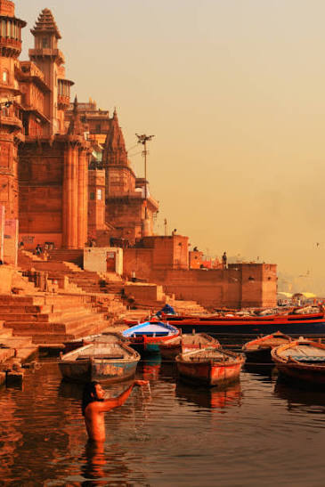
Uttar Pradesh
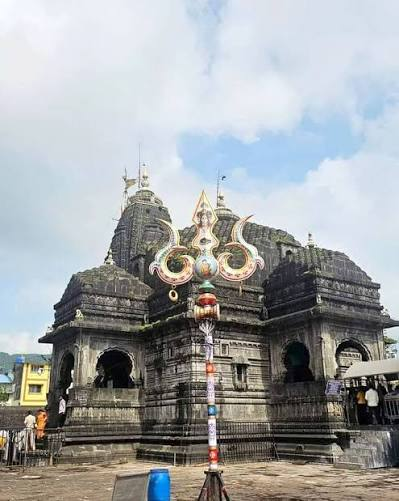
Maharashtra
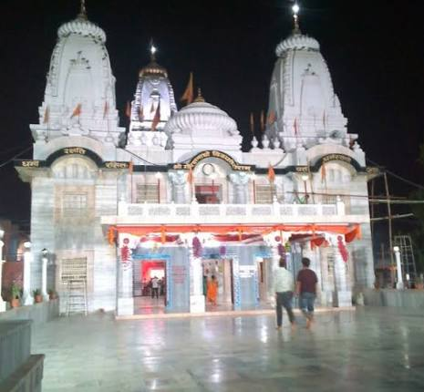
Jharkhand
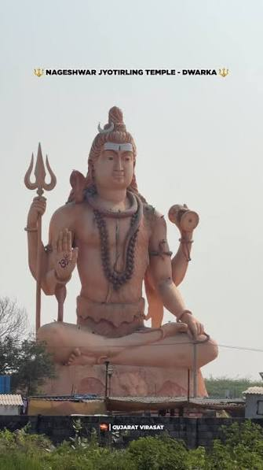
Gujarat
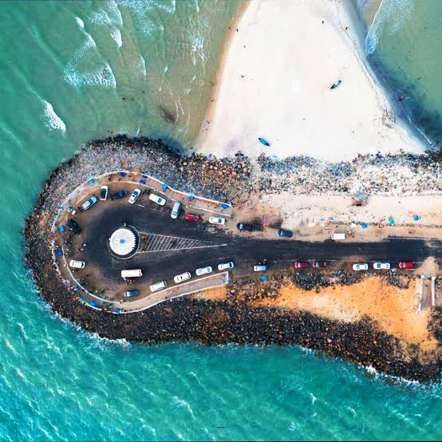
Tamil Nadu
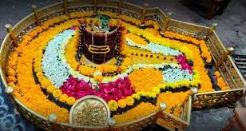
Maharashtra
📍 Prabhas Patan, Gujarat
Revered as the first Jyotirlinga, Somnath represents Shiva's eternal presence and spiritual strength.
📍 Srisailam, Andhra Pradesh
Situated on the sacred Srisailam hills, this shrine is associated with Lord Mallikarjuna and Goddess Bhramaramba.
📍 Ujjain, Madhya Pradesh
Mahakaleshwar is worshipped as the Lord of Time and is famous for its sacred Bhasma Aarti tradition.
📍 Khandwa, Madhya Pradesh
Located on Mandhata Island in the Narmada River, the sacred island is traditionally associated with the Om symbol.
📍 Rudraprayag, Uttarakhand
Set among the Himalayan mountains, Kedarnath is one of India's highest and most spiritually powerful Shiva shrines.
📍 Pune District, Maharashtra
Located in the Sahyadri hills, Bhimashankar combines deep spirituality with forests and natural beauty.
📍 Varanasi, Uttar Pradesh
Located in sacred Kashi, this temple worships Shiva as Vishwanath, the Lord of the Universe.
📍 Nashik, Maharashtra
Situated near the origin of the Godavari River, this sacred temple holds great religious importance.
📍 Deoghar, Jharkhand
Lord Shiva is worshipped here as the divine healer, Vaidyanath, who removes suffering and grants strength.
📍 Near Dwarka, Gujarat
Nageshwar represents protection from fear, negativity and harmful forces through Shiva's divine grace.
📍 Rameswaram, Tamil Nadu
Ramanathaswamy Temple is closely associated with Lord Rama and is one of India's most important pilgrimage sites.
📍 Ellora, Maharashtra
Located near the Ellora Caves, Grishneshwar is traditionally listed as the twelfth sacred Jyotirlinga.